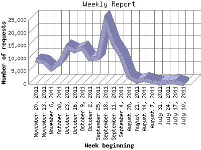

Analog 5.1
Analog 5.1 Report Magic 2.21
Report Magic 2.21The Weekly Report identifies the activity for each week within the report
time frame. Remember that one page hit can result in several server requests
as the images for each page are loaded.
Note: Depending on the
report time frame for this report the first and last week may not represent
a full seven day week, resulting in lower hits.

| Week beginning | Number of requests | Number of page requests | |
|---|---|---|---|
| 1. | July 10, 2011 | 84 | 70 |
| 2. | July 17, 2011 | 689 | 233 |
| 3. | July 24, 2011 | 606 | 504 |
| 4. | July 31, 2011 | 445 | 445 |
| 5. | August 7, 2011 | 763 | 469 |
| 6. | August 14, 2011 | 1,850 | 485 |
| 7. | August 21, 2011 | 891 | 448 |
| 8. | August 28, 2011 | 2,773 | 457 |
| 9. | September 4, 2011 | 10,872 | 626 |
| 10. | September 11, 2011 | 15,401 | 859 |
| 11. | September 18, 2011 | 24,055 | 662 |
| 12. | September 25, 2011 | 10,241 | 766 |
| 13. | October 2, 2011 | 9,790 | 712 |
| 14. | October 9, 2011 | 14,124 | 728 |
| 15. | October 16, 2011 | 12,836 | 658 |
| 16. | October 23, 2011 | 14,209 | 600 |
| 17. | October 30, 2011 | 7,922 | 556 |
| 18. | November 6, 2011 | 5,942 | 499 |
| 19. | November 13, 2011 | 8,642 | 591 |
| 20. | November 20, 2011 | 9,273 | 386 |
Most active week beginning September 11, 2011 : 859 pages sent. 24,055 requests handled.
Weekly average: 537 pages sent. 7,570 requests handled.
This report was generated on November 24, 2011 04:12.
Report time frame July 13, 2011 04:17 to November 23, 2011 23:59.
| Web statistics report produced by: | |
| Analog 5.1 | Report Magic 2.21 |